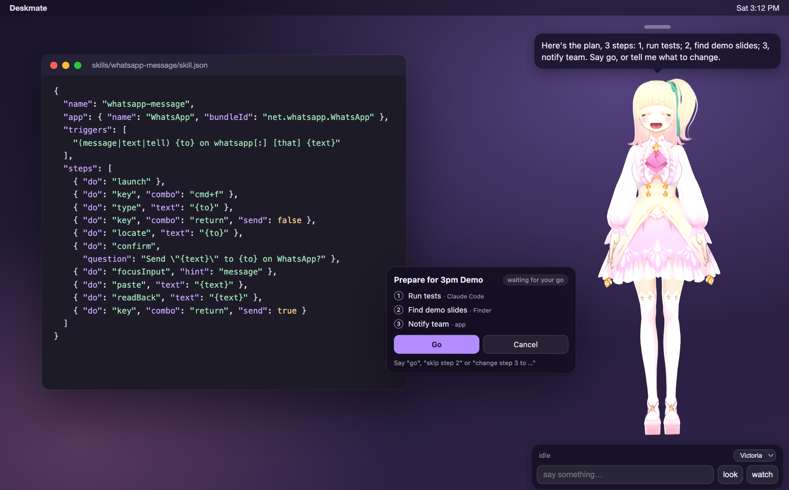
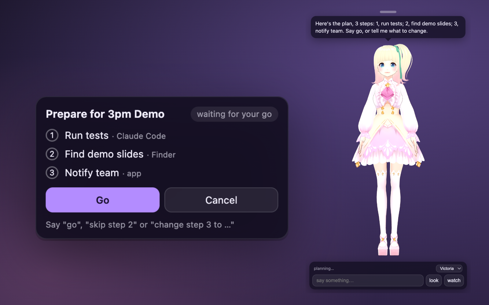
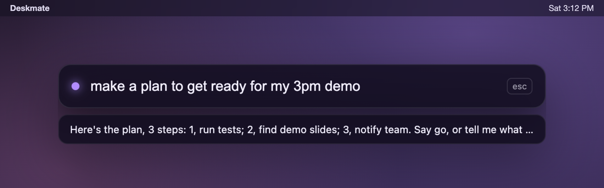
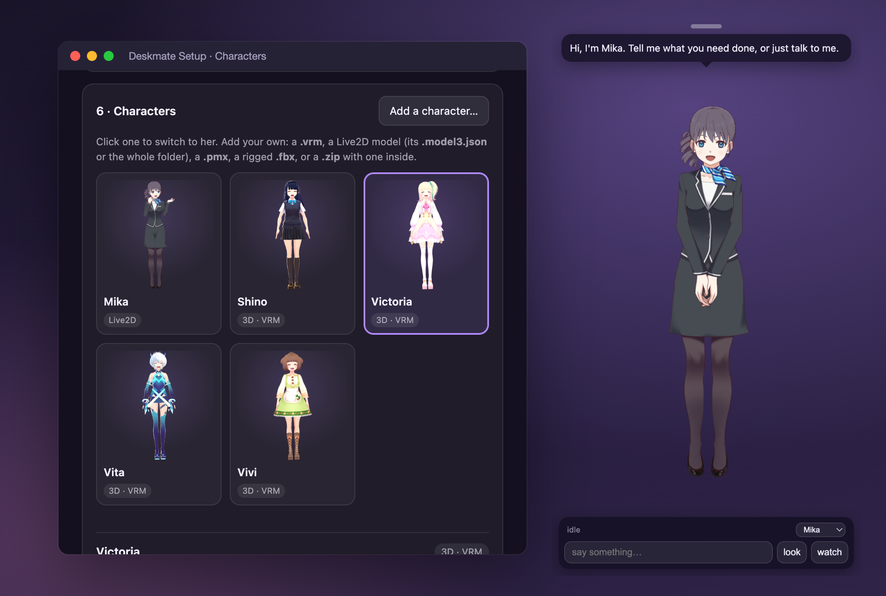

Plans you can see, and change.
Ask for something bigger and she lays it out first: who does each step, in order. Nothing runs until you say go.
"skip step 2""change step 3 to…""pause""stop the plan"
Deskmate is an AI agent that lives on your desktop as a Live2D or 3D character. Talk to her and she works your apps, plans bigger jobs, hands code to Claude Code, and asks before anything goes out.

Most agents live in a terminal or a chat app. Deskmate lives on top of your desktop, where you can see her work, hear her, and stop her.
Discord, Slack, Messages, WhatsApp, Telegram, Notes, Spotify. She finds the chat, checks it's the right one, reads the message back, and sends on your yes.
"Tell Sam on Discord I'm running late."A goal becomes steps on a card beside her. She waits for your go, hands each step to the right worker, and pauses if one fails.
"Get ready for my 3pm demo."She runs the job in the right folder, follows it, dozes on your terminal while it runs, and tells you what came back.
"Ask Claude to fix the failing tests."A job done, a message from Sam, a meeting in ten minutes, the reminders you asked for. Quiet hours hold it all for later.
"Remind me at 6 to call mum."Whisper hears you and Kokoro answers, lip-synced, on your machine. Or press ⌥Space and type.
"Victoria, what's this error?"Text her from Telegram, Discord, iMessage, Slack or Signal. Only you can reach her, and her "send it?" questions come back to the chat.
"Send me the PDF I just downloaded."A real agent under the face, and the safety rails to leave it running.
With Claude she runs a tool loop over everything she can do: your apps, Chrome, files, plans, Claude Code, reminders. Untrusted text from web pages and messages can't make her send, delete or pay without asking.
Add any Model Context Protocol server in one file (GitHub, a database, your own) and its tools join hers, behind the same permission levels and read-backs.
What she knows about you lives in USER.md and MEMORY.md, files you can open and edit. "What did I ask you about the dentist?" searches everything you two said and did.
Skills written for OpenClaw or Hermes work here. After a long task that worked she writes one herself, and keeps it only on your yes.
"Every weekday at 9 summarise my Slack." A heartbeat checks a short list and stays quiet unless something needs you; a morning brief sums up the day.
Telegram, Discord, iMessage, Slack and Signal, paired to you alone. Voice notes, screenshots and files, after a yes.
Allow, ask or never per tool and per origin; an activity log with undo; a spending meter with a monthly budget; keys in the Keychain; a kill switch on Control-Option-Escape.
One download for every Mac. A short tour picks her brain, her look and her voice, and walks through each macOS permission with a live check.
Signed builds download new versions in the background and install them when she quits. Or turn the check off; nothing else phones home.
Ask for something bigger and she lays it out first: who does each step, in order. Nothing runs until you say go.
"skip step 2""change step 3 to…""pause""stop the plan"

Press ⌥Space over any app, type what you want, Enter. Her answer shows underneath; when she asks "send it?", type yes right there. Works with her hidden.

Five ship: Mika in Live2D and four CC0 VRoid girls. Add your own: a .vrm, a Live2D folder, an MMD .pmx, a rigged .fbx, or a .zip. Her expressions are mapped, her licence read, and her personality is a text file you edit.
She walks over, sits on your windows, points at the file you asked for, and swats at your pointer.

The rules live in the code that presses the keys, not in a prompt a model could talk its way around.
Two kinds. Instructions in the open SKILL.md format, the same as OpenClaw and Hermes. Or an app routine: a small JSON recipe with the app, the phrases that trigger it, and the steps. Drop either in your skills folder and she can do it by voice, the agent gets it as a tool, and plans can use it as a step.
Bundled: WhatsApp message, Telegram message, Notes new note. Write your own →
{
"name": "notes-new-note",
"app": { "name": "Notes", "bundleId": "com.apple.Notes" },
"slots": [{ "name": "text" }],
"triggers": [
"(make|create) a [new] note [saying] {text}"
],
"steps": [
{ "do": "launch" },
{ "do": "menu", "path": ["File", "New Note"] },
{ "do": "paste", "text": "{text}" },
{ "do": "readBack", "text": "{text}" }
],
"done": "Added it to Notes."
}
An honest look. Each of these is good at something different.
| Deskmate | Terminal and chat agents (OpenClaw, Hermes) | Companion apps and desktop pets | |
|---|---|---|---|
| Lives | on your desktop, as a character | a terminal, or a chat app you message | a phone app, a chat window, or a pet on screen |
| Does things | native app control, Chrome, Claude Code, plans | shell, files, browser, many integrations | mostly no |
| Extending it | SKILL.md skills, MCP servers, app routines, characters | large plugin and skill ecosystems | closed |
| Asks before sending | built into the hands | depends on the setup | n/a |
| Fully local | yes | yes, with a local model | usually cloud |
OpenClaw and Hermes are further along as general agents, with far more integrations and server use; if you live in a terminal, use them. Deskmate is for the desktop you sit at: an agent with a face, a voice, and physical cues, working through the real UI of the apps you already use.
macOS is the full experience. App control on Windows is experimental; on Linux she talks, plans, reminds and runs Claude Code.
brew install --cask muhammadmurtuzahussain/deskmate/deskmateOpen source under the MIT licence. Skills, characters and Windows testers welcome.